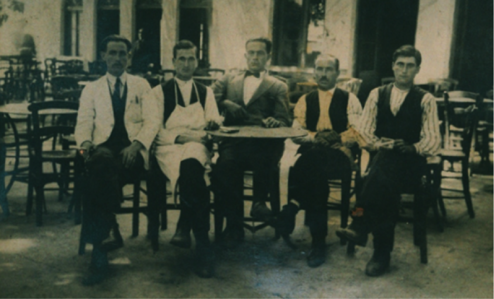
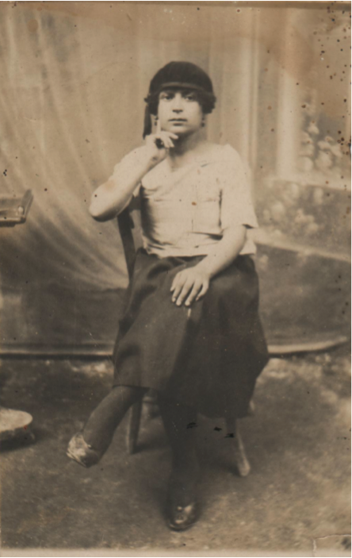
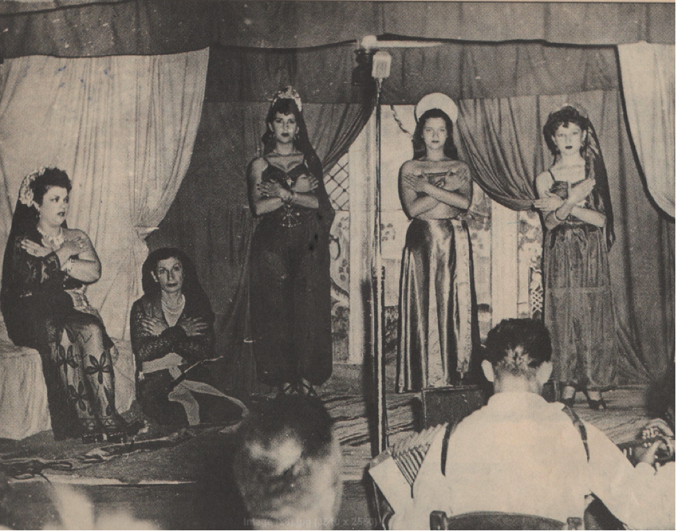
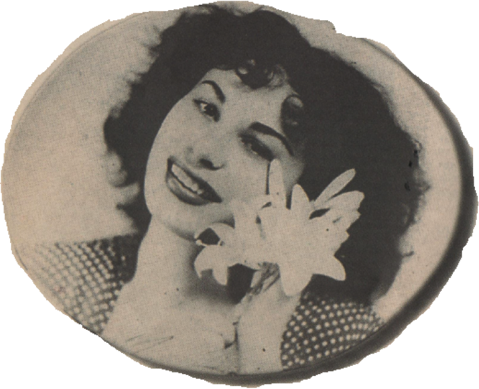
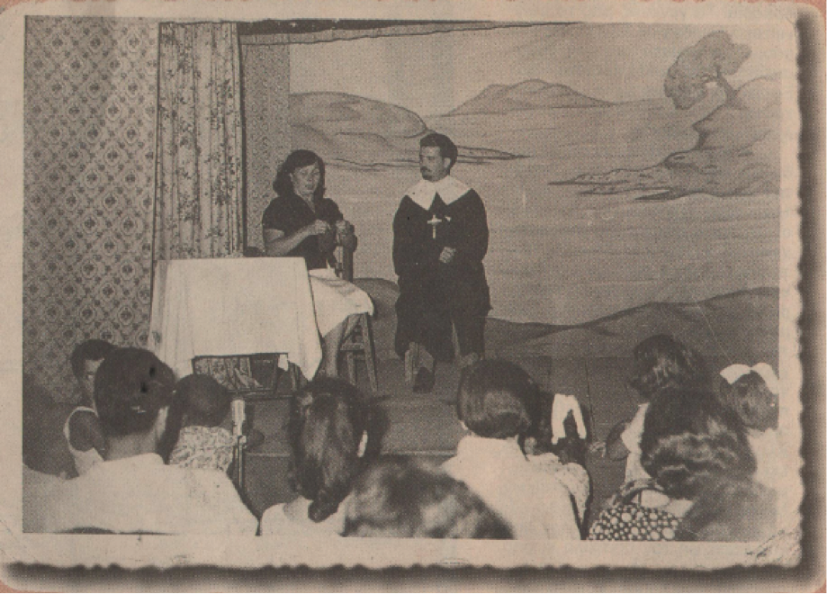
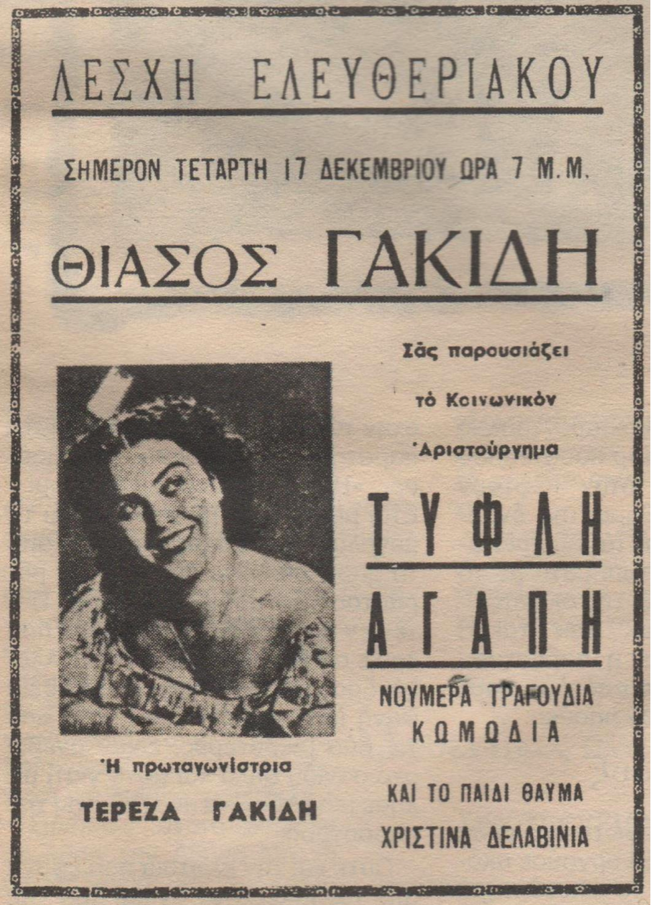
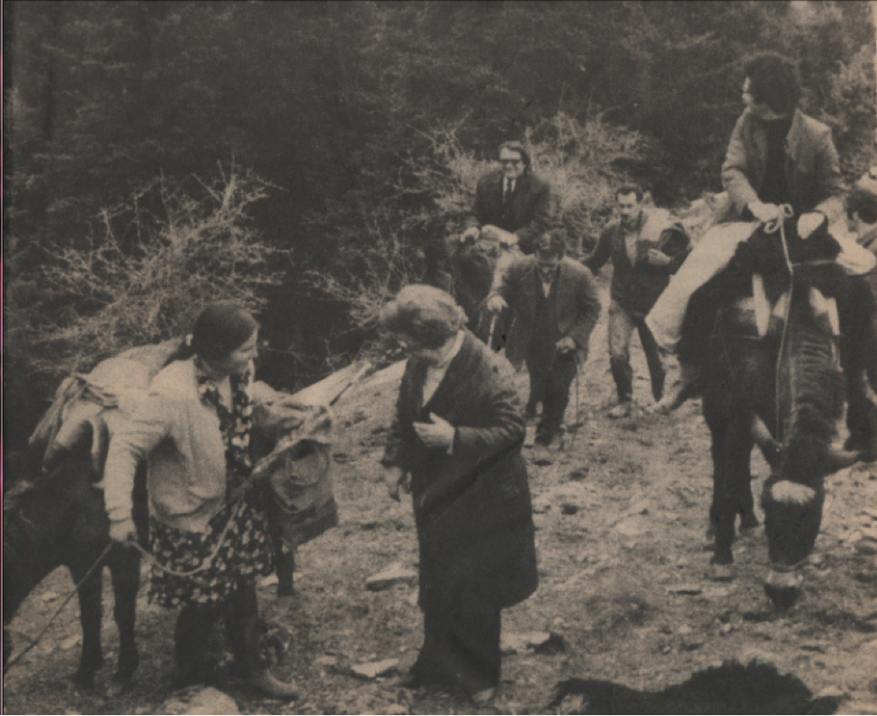

θεατρικά μπουλούκια
Από την εποχή που ο Θέσπις ταξίδευε με τον αραμπά του μεταφέροντας τις παραστάσεις από τόπο σε τόπο, στην κλασική Ελλάδα, όπως και ο Αθηναίος ηθοποιός Νικήρατος (5ος αιώνας π.χ.), σ αυτόν τον τόπο του πνεύματος και του φωτός δεν σταματήσανε τα θεατρικά δρώμενα μέχρι και σήμερα. Έντεκα χιλ. πεντακόσια θέατρα λειτουργούσαν την εποχή εκείνη στον ελληνικό χώρο και αποτελούν βαριά κληρονομιά για μας σήμερα. Το ελληνικό μπουλούκι είναι μέρος της θεατρικής μας ιστορίας είναι απόγονος του περιπλανώμενου διονυσιακού θιάσου, του αοιδού και του ραψωδού, των θιάσων της κομέντια ντελ άρτε. Το 19ο αιώνα γνωρίζουν μεγάλη άνθηση τα «θεατρικά μπουλούκια», όπως έχει καθιερωθεί να λέγονται οι περιφερόμενοι θίασοι, που φτάνει η δράση τους μέχρι και τη δεκαετία του 1950, όπου αργότερα, έχουμε τη σύγχρονη συνέχεια του πετυχημένου θεσμού των ΔΗΠΕΘΕ( δημοτικά περιφερειακά θέατρα) μέχρι και της ημέρες μας. Πράγματι ο δρόμος των μπουλουκιών έρχεται από πολύ μακριά.

Το καφενείο του Νίκου Σακούλη στον Αι Γιώργη, από αριστερά τέταρτος ο γιος του Γιάννης 1929. ( Από το αρχείο του Γιώργου Τριανταφύλλου)
Τα μπουλούκια ταξίδευαν πάντα με τρένα, μουλάρια, σε καρότσες φορτηγών, ή με εισιτήριο τρίτης θέσης, έμεναν όπου μπορούσαν – συχνά κάτω από άθλιες συνθήκες. Ήταν οικογένειες θεατρίνων πολλές φορές και δύο γενιών πού γύριζαν σε όλη την Ελλάδα σε χωριά και κωμοπόλεις δίνοντας παραστάσεις σε καφενεία, σχολεία πλατείες και αλώνια. Δημιουργώντας αυτοσχέδιες σκηνές από τα ίδια τα τραπέζια του καφενείου και φωτισμό με λάμπες λουξ. Σε μικρά χωριά αντί για εισιτήριο ο κόσμος τους πήγαινε καμιά κότα, αβγά, ζυμωτό ψωμί, χόρτα, και ότι άλλο αγαθό είχε ο καθένας. ( θεατρικές εξορμήσεις στην περιοχή του Βόλου από την εφημερίδα ΝΕΑ ΕΦΗΜΕΡΙΣ, 9 Μαρτίου 1883 : «Εν Βόλω δίδει παραστάσεις θίασος υπό τον κ. Ανδρονόπουλον όστις ήρχισε δια του Οθέλλου. Ως θέατρον διεσκευάσθη προσηκόντως του καφενείου Ζαλούχου» ).

Μια από της ηθοποιούς που συμμετείχαν στα μπουλούκια η Στέλλα 1924
(από το αρχείο του Γιώργου Τριανταφύλλου)
«Ο αγαπητικός της βοσκοπούλας», Η «Γκόλφω», «Η ωραία του πέραν», «Ο κουρσάρος», «Εσμέ η Τουρκοπούλα» «Μαρία Πενταγιώτισα» ήταν μερικά μόνο από τα έργα που περιλαμβάνονταν στο ρεπερτόριο των μπουλουκιών. Επίσης συμπεριελάμβαναν και κάποιες «νούτικες κωμωδίες» (από το νου). Οι κωμωδίες αυτές δεν είχαν καθόλου κείμενο και οι ηθοποιοί αναγκάζονταν να αυτοσχεδιάζουν από μνήμης και να προσαρμόζουν κατά περίσταση και κατά περιοχή , αυτό ήταν και το μεγάλο σχολείο για όλο το θίασο. Όσο μεγαλύτερο ρεπερτόριο είχε ο θίασος, τόσο περισσότερο μπορούσε να μείνει σε ένα μέρος αλλάζοντας έργο κάθε βράδυ.

Το τσαντίρι του Παπαδόπουλου σε έργο αραβικης υπόθεσης. Αριστερά η Μαρία Παπαδοπούλου - Θηβαίου (Αρχείο Γ Χατζηδάκη).
Η προκατάληψη ήταν αρνητική από της τοπικές κοινωνίες της εποχής, Παρόλο που φρόντιζαν οι θιασάρχες τα σχήματα να είναι οικογενειακά και τα υπόλοιπα μέλη να είναι όσο το δυνατόν ζευγάρια για να μην προκαλούν, ωστόσο η προκατάληψη για τους θεατρίνους ήταν βαθιά ριζωμένη. Η εκκλησία δεν μπορούσε να δεχτεί το σινάφι των «αμαρτωλών» και «ακαθάρτων», που άνδρες και γυναίκες συμβιώνουν, κοιμούνται στα ξενοδοχεία, γδύνονται και ντύνονται για να βγούνε στη σκηνή, καμώνονται πώς ερωτεύονται, πως τάχα πεθαίνουν και « όλα αυτά τα υποκριτικά και ψεύτικα».

Η Βρανά στα 18 της, περιζήτητη τότε στα μπουλούκια, όχι μόνο για το μπρίο και την ομορφιά της, αλλά και για το ταλέντο της.
Τα μπουλούκια αποτελέσανε μικρό πανεπιστήμιο θεατρικής παιδείας των ανθρώπων τις υπαίθρου αλλά και των ίδιων των καλλιτεχνών που συμμετείχαν σ αυτά. Περάσανε από τα μπουλούκια μεγάλα ονόματα που γίνανε μετέπειτα γνωστοί πρωταγωνιστές όπως η Σπεράντζα Βρανά, η Καλή Καλό, ο Κώστας και Γιώργος Γακίδης, , ο Στέφανος και η Αλέκα Στρατηγού καθώς και οι οικογένειες Στέφανου και Κατίνας Καλουτά με τις γνωστές κόρες Άννα και Μαρία, τα γνωστά τότε «Καλουτάκια», την οικογένεια Κοτοπούλη όπου έπαιξε σε ηλικία 12 χρονών στον «Αγαπητικό της βοσκοπούλας»- η κατόπιν μεγάλη Μαρίκα Κοτοπούλη-, η οικ. Νέζερ, η οικ. Πρεβελέγγιου και πολύ άλλοι.
Και για να έρθουμε και στα δικά μας, ο τότε Άι-Γιώργης ο Μεγάλος, κεφαλοχώρι και πλουσιότερο χωριό του Πηλίου έπαιξε σημαντικό ρόλο στα θεατρικά πράγματα. Από της αρχές του 20ου αιώνα γνωρίζουμε για τη φιλοξενία μπουλουκιών στο χωριό.

To μπουλούκι Aσλανίδη: «Eίμαι ένας δραπέτης», σε μια παράσταση στη Θεσσαλονίκη. Eπί σκηνής η Δάνου και ο Σαλαχάς.
Στη θέση της πλατείας που είναι το άγαλμα του Νικόλα σήμερα, ήταν ένα μεγάλο καφενείο που καταστράφηκε (το έκαψαν οι Γερμανοί στην Κατοχή στον Β! παγκόσμιο πόλεμο). Εκεί λειτουργούσε το καφενείο του Νίκου Σακούλι (παππού του γράφοντος), σ’ αυτό το χώρο παίζονταν οι θεατρικές παραστάσεις. Και στην Αγία τριάδα (οικισμό του Αγίου Γεωργίου) στο Μοναστηριακό μαγαζί το χειμώνα. Από αυτές τις φιλοξενίες υπάρχουν φωτογραφίες καθώς και αφηγήσεις από ηλικιωμένους σήμερα Α’ι’γιωργίτες που έχουν ζήσει αυτές της ιστορίες και ακόμα θυμούνται της σάτιρες που λεγόντανε τότε «Η Σουλτάνα και η Σταυρούλα μας άδειάσαν τη σακούλα». Δηλαδή ξοδεύονταν αρκετά πηγαίνοντας καθημερινά στο θέατρο για να βλέπουν της παραστάσεις με τις καλλίγραμμες πρωταγωνίστριες, καθώς ο θίασος έμενε για αρκετό καιρό στο χωριό.

Μια από της ηθοποιούς που συμμετείχαν στα μπουλούκια η Στέλλα 1924
(από το αρχείο του Γιώργου Τριανταφύλλου)
Από τα καφενεία, το μοναστηριακό στην Αγία-Τριάδα, το «κουλοχεραίικο» στην Άνω Γατζέα, και του Σακούλι στον Α΄ι Γιώργη, περάσανε τα ποιο γνωστά μπουλούκια της εποχής, του Παπά, του Αρμάου, του Κυπαρίσιου, του Τσάκωνα, που γνώρισαν μεγάλη επιτυχία και κοσμοσυρροή, όπως γράφει και ο Κώστας Λιάπης στο βιβλίο του «Ο μεγάλος Α’ι’-Γιώργης του Πηλίου»
Και τα πράγματα δεν ήταν πάντα και τόσο πολιτισμένα ώστε οι θεατές να παρακολουθούν με σεβασμό το έργο που παίζονταν. Είχαν γίνει και επεισόδια, όπως σε μια παράσταση που ένας α’ι’γιωργίτης της εποχής ο Σκούρτας παρενοχλούσε την ηθοποιό κατά τη διάρκεια της παράστασης και μάλλον θα έγινε πολύ φορτικός ώσπου ο ηθοποιός τράβηξε το σπαθί του ρόλου εναντίον του, και ο θεατής το έπιασε με τα χέρια του για να αμυνθεί, με αποτέλεσμα νε κόψει της παλάμες του.

Θεατρικό μπουλούκι ανεβαίνει τα κακοτράχαλα βουνά με τον εξοπλισμό του πάνω στα μουλάρια για να παίξει στο καφενείο του χωριού.
Γνωρίζουμε επίσης πώς στη κατοχή σε εκείνα τα κρίσιμα χρόνια, όταν παρέλυσαν οι πόλεις και μάζευαν κάθε πρωί με τα κάρα τους νεκρούς από την πείνα στους δρόμους του Βόλου και τον άλλων πόλεων, στον Αι-Γιώργη δεν έλειψαν τουλάχιστον τα βασικά αγαθά, δεν πείνασε! Είχε κυρίως το λάδι σε αφθονία, χρήσιμο για την επιβίωση, αλλά και ανταλλάξιμο αγαθό για της υπόλοιπες ανάγκες διατροφής. Τα μπουλούκια είχαν βρει την περίοδο εκείνη καταφύγιο στον Αι Γιώργη, και είχαν εγκατασταθεί μόνιμα στο χωριό ώστε είχαν τουλάχιστον διασφαλισμένο το φαί τους. Και έτσι πέρασαν όλη εκείνη την περίοδο ζώντας και παίζοντας κάθε βράδυ στο καφενείο του χωριού.
Πάνω από 50 χρόνια τα θεατρικά μπουλούκια μέσα από τεράστιες δυσκολίες και με τα πενιχρά μέσα που διέθεταν, γαλούχησαν θεατρικά το μεγάλο ποσοστό του πληθυσμού της περιφέρειας και επηρέασαν αισθητικά και θεματικά τον λεγόμενο εμπορικό κινηματογράφο και την επιθεώρηση.